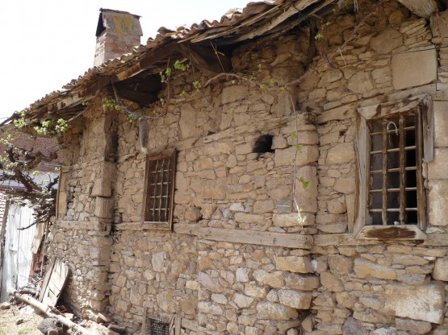
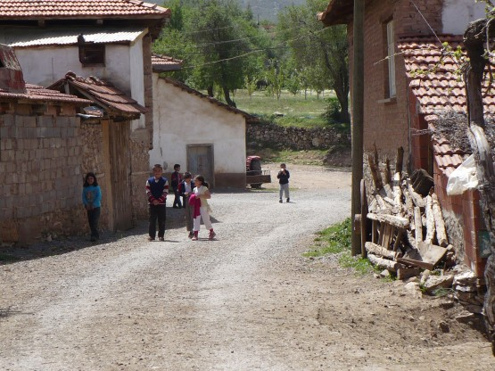

15 апреля
Относительно быстро перевалился, спуск с перевала, поворот на 330 дорогу. Движение стало значительно спокойнее. Большой равнинный участок до Тавас. Но сильный встречный ветер все равно не дал сделать в этот день приличный километраж. Проехал Тавас-Медет-Кале. Заехал в местную деревушку, которая очень сильно отличается от туристической Турции. Пару фото из этой деревни.
Хвост

Дети они и в Турции дети - любопытные

На ночевку остановился на берегу реки. Получилось поплавать в горном потоке глубиной сантиметров в 40. Интересные ощущения.